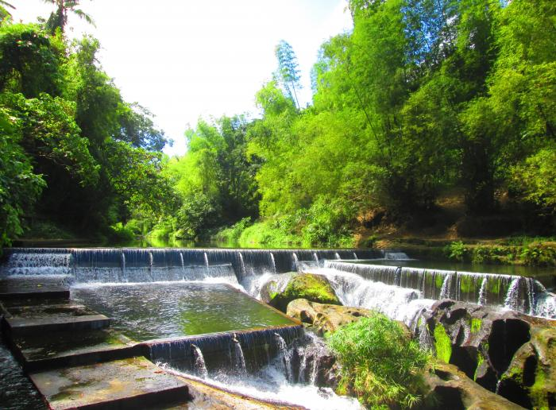
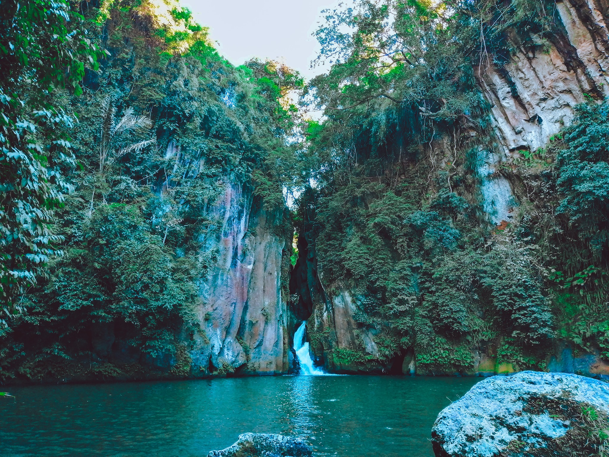
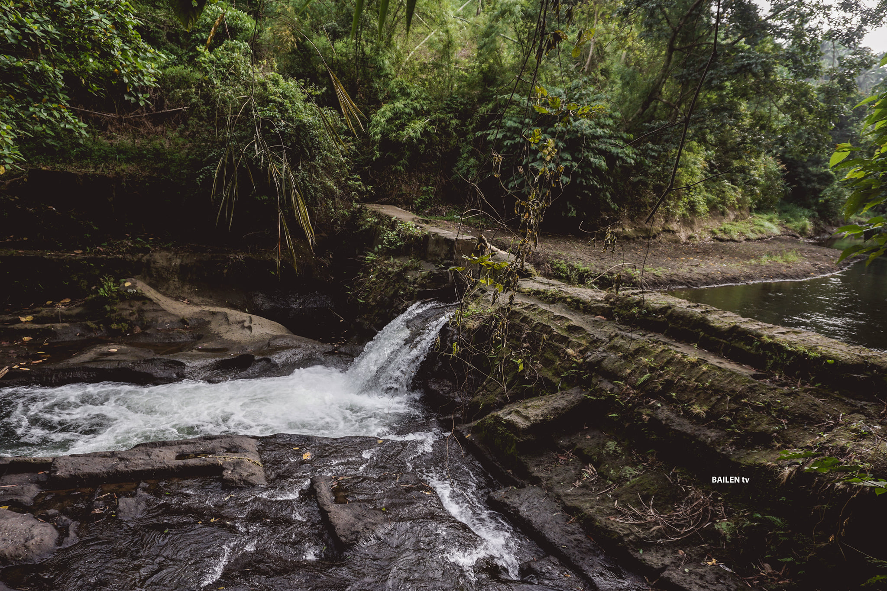
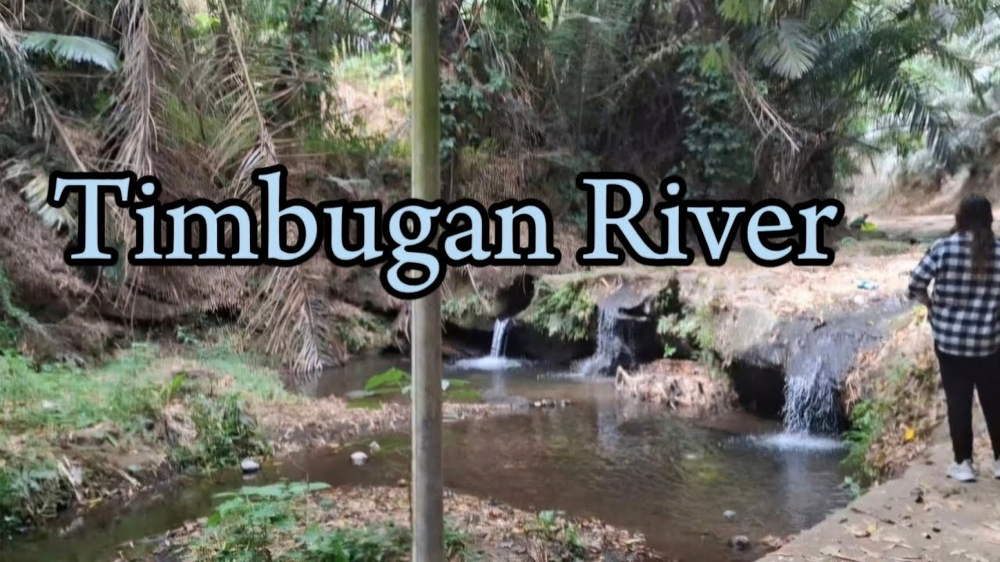

About the Rivers of Bailen
Tala River Park
Tala River Park is the longest river in Bailen. This park offers a serene environment with lush greenery, making it a popular picnic destination for locals. The river flows gently through the park, providing a perfect setting for relaxation and nature walks. Families often visit Tala River Park to enjoy the natural beauty and the calming sounds of the river.
Malibic Libic Falls
Malibik-libik Falls is Bailen's most popular attraction, known for its unique rock formations. Although the waterfall itself is only about two meters high, the surrounding rock formations reach approximately 10 meters. The falls receive water from the rivers of Alfonso, a neighboring town of Bailen. The water cascades into a large pool that is about 20 meters deep before flowing into the Malibik-libik River. Tourists can swim in the pool but should stay in the shallow areas due to a strong undertow in the deeper parts. The river, which is about a meter deep in some sections, also has a strong current. Reaching Malibik-libik Falls requires a 30-minute trek and navigating moss-covered boulders. Nearby, Putikan River, just a 20-minute trek from Malibik-libik, offers much calmer waters, making it ideal for boating and kayaking (bring your own equipment). The Putikan River is also home to a plentiful population of freshwater fish, including carp and tilapia.
Paliguang Aso
Locals refer to the boulders as "Paliguang Aso" (bath for dogs), although it's rare to see dogs bathing there. The river, fed by tributaries from Alfonso and Bailen, once served as a hydroelectric energy source for a nearby rice mill. As you descend from the boulders, you will come across Mag-asawang-bato, named after two large boulders positioned in the middle of the river. To reach the river, visitors must descend a long staircase with about 160 steps. This area is an excellent spot for picnics, swimming, and river trekking.
Timbugan
Timbugan is a serene and beautiful river spot in Bailen, located on River D. It is known for its tranquil waters and scenic views. The river is a popular location for fishing and boating. Timbugan is surrounded by natural beauty, making it an ideal spot for relaxation and unwinding from the hustle and bustle of everyday life. The clear waters and peaceful environment make it a perfect destination for nature lovers.
